02 · S13 霧灰柔光情感敘事
慢慢，陪你回家
Home at Your Pace
路可以慢，陪伴不缺席。
Take your time. I'll stay by your side.
60 秒＝片頭 5 秒＋10 鏡各 5 秒＋片尾 5 秒。共 15 張定稿圖片；點擊圖片可查看原圖。影片部分交付 12 組雙語生成提示詞。
完整製作規格 · 中文字幕 · English captions
角色設定與共同體型

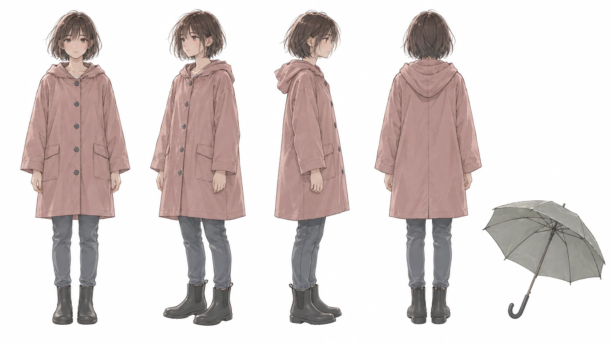
灰粉雨衣、深棕短髮；右下另附灰綠雨傘

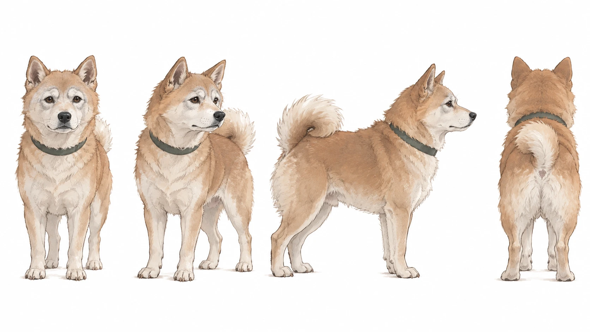
老柴犬：泛白口鼻、灰白眉、深灰綠項圈與捲尾

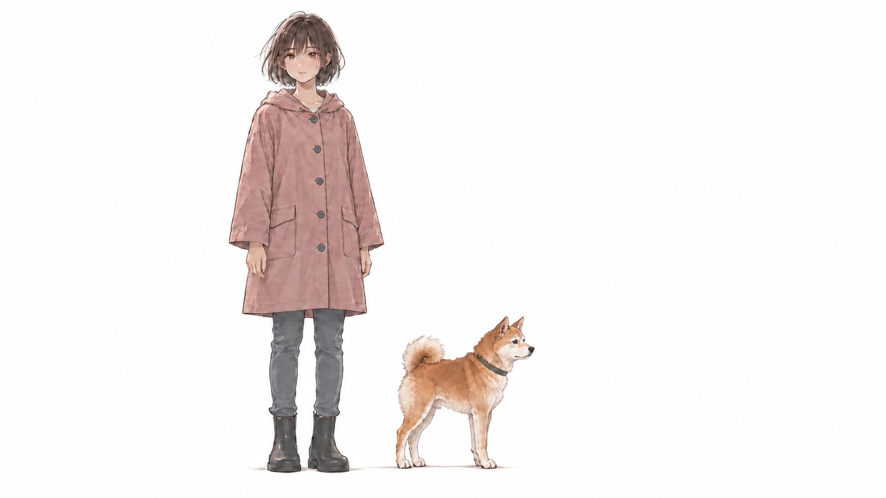
同地面、同景深；小型成年柴犬比例
片頭與片尾｜2026-10-23 獨立構圖改版

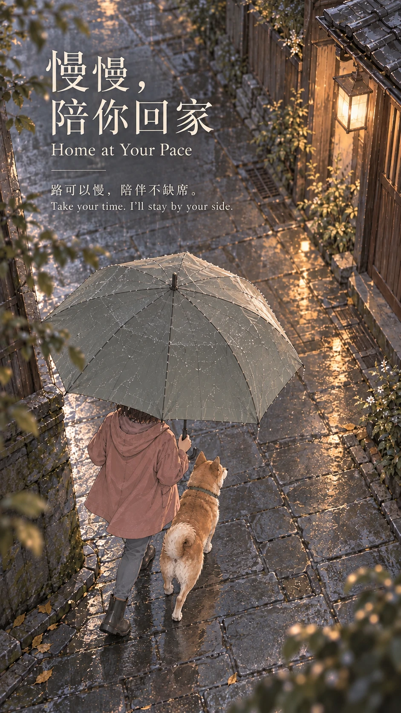
雨巷轉角的俯視傘面｜少女與老犬共同遮雨修正版

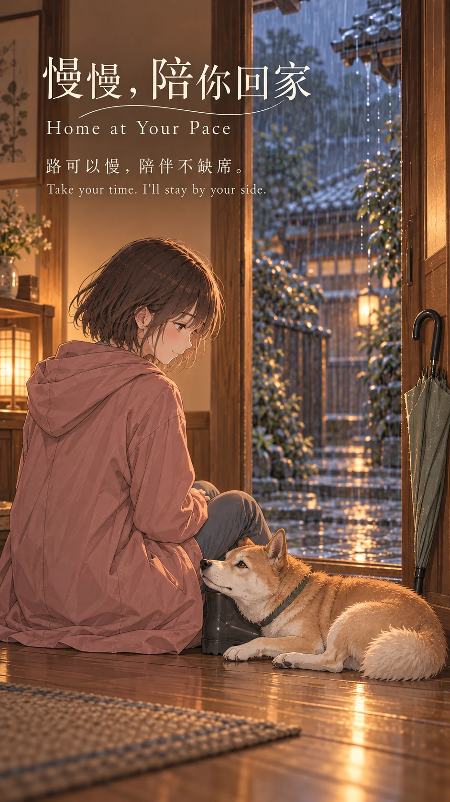
屋內門檻的到家餘韻｜獨立構圖改版
十張分鏡

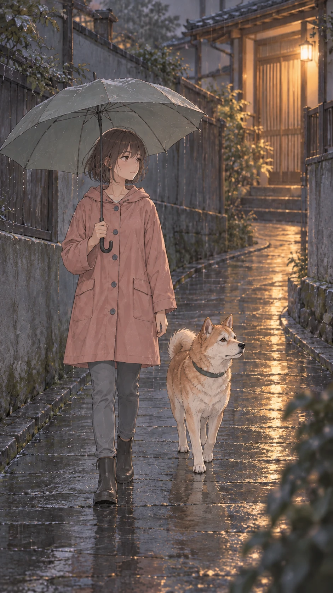
5–10 秒 · 雨要來了我們回家 / Rain is coming. Let's go home.

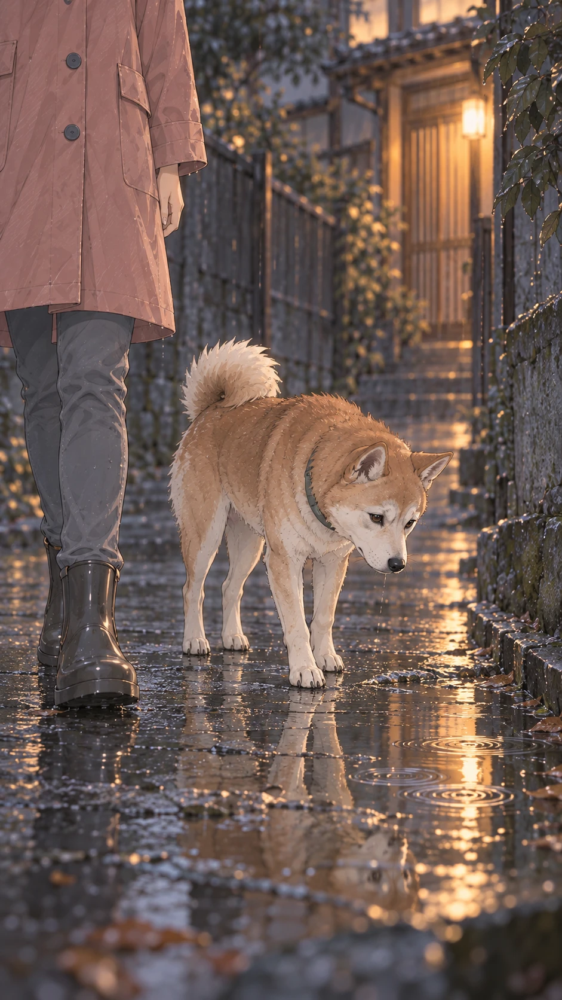
10–15 秒 · 你的腳步慢了一點 / Your steps have grown slower.

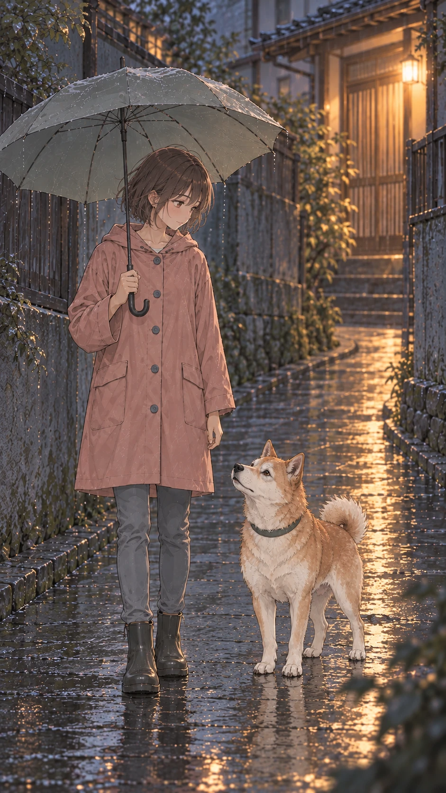
15–20 秒 · 我先停下來等你 / I'll stop and wait for you.

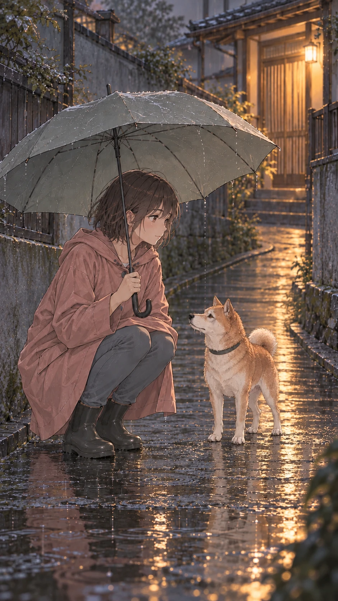
20–25 秒 · 蹲低才懂你的世界 / I kneel to see your world.

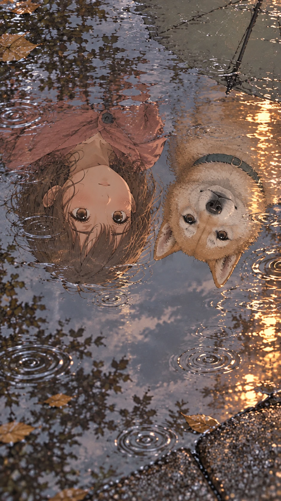
25–30 秒 · 水裡還有我們兩個 / There we are, together.

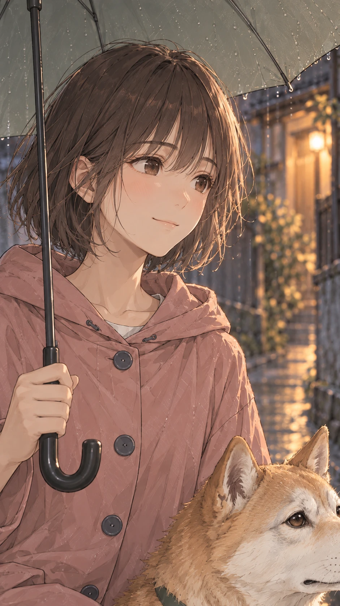
30–35 秒 · 原來你也捨不得 / You want to linger, too.

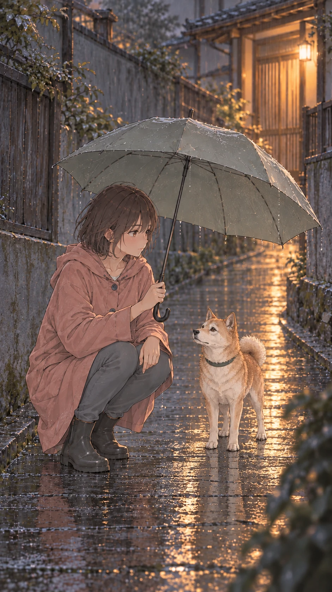
35–40 秒 · 把傘多分給你一點 / More shelter, just for you.

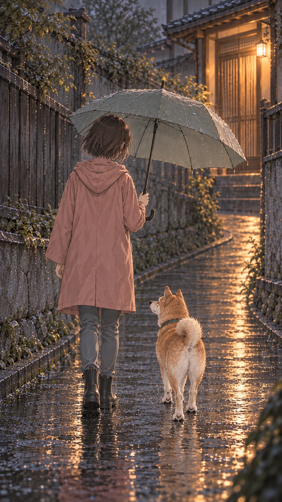
40–45 秒 · 回家的路不必著急 / There's no need to hurry home.

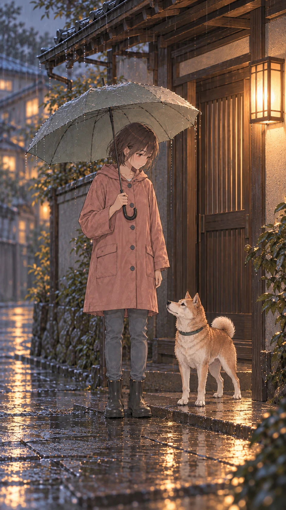
45–50 秒 · 那盞燈一直等我們 / That light is waiting for us.

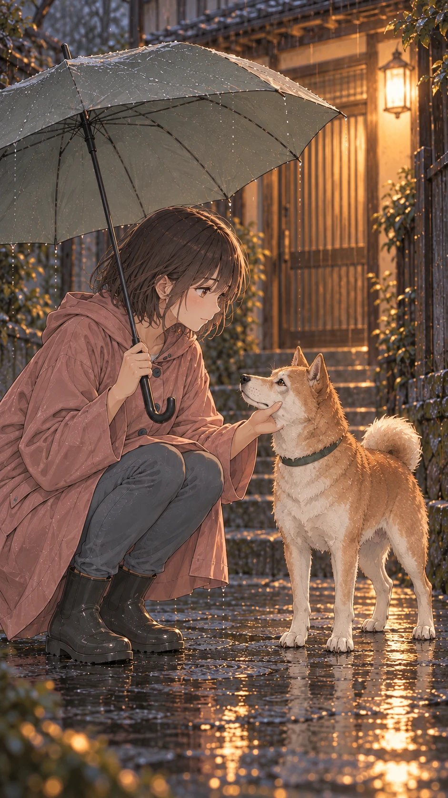
50–55 秒 · 有你在身旁就是家 / Home is having you beside me.
角色圖為橫式 16:9 構圖，海報與分鏡為直式 9:16 構圖。原生尺寸 1672×941／941×1672 含生成工具取整差異，精確輸出方式與逐檔尺寸見完整規格與資產清單。